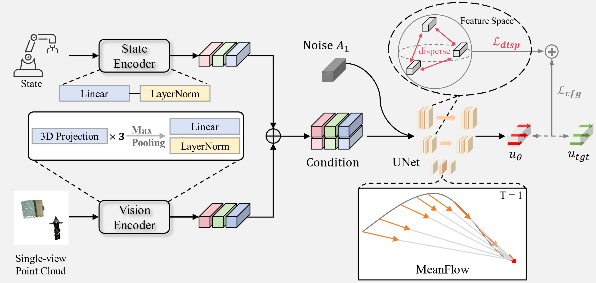
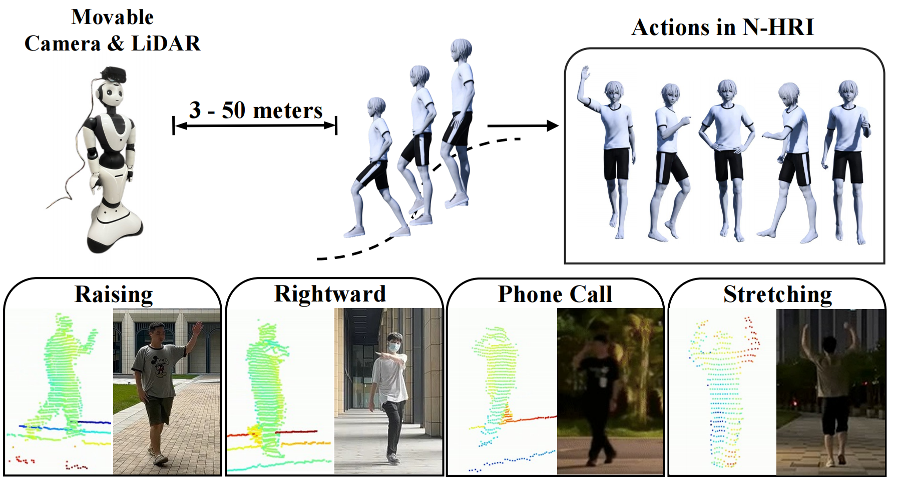

|
Ziyi Wang (王梓懿) I'm currently a first-year M.S. student at Peking University, Shenzhen Graduate School, majoring in Computer Science and Technology, advised by Prof. Mengyuan Liu and Prof. Hong Liu. I am broadly interested in computer vision and deep learning. Before that, I received my B.S. degree in Computer Science and Technology (ranked top 1 out of 289 students) from Ocean University of China in 2024. |

|
Publications* indicates equal contribution, # indicates corresponding author |
|  |
MP1: MeanFlow Tames Policy Learning in 1-step for Robotic Manipulation
Juyi Sheng*, Ziyi Wang*, Peiming Li, Mengyuan Liu# Preprint arXiv / Code |
|  |
(ACTIVE) Recognizing Actions from Robotic View for Natural Human-Robot Interaction
Ziyi Wang, Peiming Li, Hong Liu, Zhichao Deng, Can Wang, Jun Liu, Junsong Yuan, Mengyuan Liu# IEEE International Conference on Computer Vision (ICCV), 2025 arXiv / Project Page / Code |
|
UST-SSM: Unified Spatio-Temporal State Space Models for Point Cloud Video Modeling
Peiming Li, Ziyi Wang, Yulin Yuan, Hong Liu, Xiangming Meng, Junsong Yuan, Mengyuan Liu# IEEE International Conference on Computer Vision (ICCV), 2025 Code |
|
|
ClickDiff: Click to Induce Semantic Contact Map for Controllable Grasp Generation with Diffusion Models
Peiming Li*, Ziyi Wang*, Mengyuan Liu#, Hong Liu, Chen Chen ACM International Conference on Multimedia (ACM MM), 2024 (Oral Presentation) arXiv / Code |
|
|
Global and Local Attention-Based Transformer for Hyperspectral Image Change Detection
Ziyi Wang, Feng Gao# Junyu Dong, Qiang Du IEEE Geoscience and Remote Sensing Letters (GRSL), 2024 arXiv / Code |
Selected Honors & Awards2023
2023
2023
2024
2023
2023
2022
|